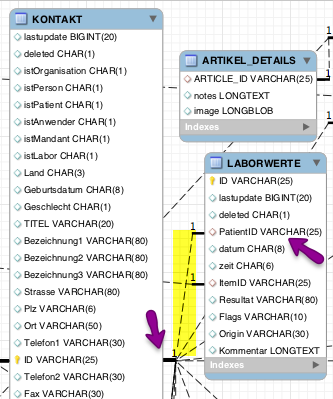

At.medevit.elexis.dbcheck
Contents
- 1 (Med-)Elexis Datenbank Wartungs Tool
- 2 Anforderungen
- 3 Begriffsdefinition
- 4 Verwendung des Tools
- 5 Datenbank-Model
- 6 Externe Verwendung
- 6.1 [4947] RocketHealt Artikel werden nicht auf MwSt geprüft
- 6.2 [5285/6499] Datenbank Artikelzuordnung nicht mehr vorhanden (Artikelstamm Update)
- 6.3 [5579] Für jede Diagnose wird ein neuer Diagnose-Eintrag erstellt
- 6.4 [2681] Tarmed Leistungen in den Blöcken auf das heutige Datum Anpassen
- 6.5 [1122] EAL Zuschlag 4708.00 nachgetragen
- 6.6 [3200] EAL Leistungen anpassen
- 6.7 [2003] Artikel (auch gelöschte) mit Pharmacode <7 Zeichen reparieren
- 6.8 [2003] Bestellungen ohne Inhalt nach upgrade auf 2.1.7 reparieren
- 6.9 [1439] Verschiebe Fall.AHV-Nummer Zuordnung zu Kontakt
- 6.10 [2454] Fix class type designations in article and leistungen
- 6.11 [2525] Mehrfache und leere Laborwerte entfernen
- 6.12 [2525] Pathologisch bei allen Laborwerten neu setzen
- 6.13 [2956] Konsultationen auf Gültigkeit überprüfen
- 6.14 [3403] Standarddiagnose für offene Konsultationen ohne Diagnose eintragen
- 6.15 [3487] OmnivoreDirect (mit Scan) - Datum für Erstelldatum übernehmen
- 6.16 [3341] Feld aus Abrechnungssystem umbenennen
- 6.17 [5098] Alle offenen Konsutlationen abrechnen und Fälle schliessen
- 6.18 [10651] Tarmed Leistungen aller offenen Konsutlationen dieses Jahres neu verrechnen
- 6.19 [6105] Abrechnungssystem_Kostenträger_Gesetz_3.6
- 7 Anmerkungen
(Med-)Elexis Datenbank Wartungs Tool
Bezeichnung: Datenbank Wartungs Tool
Author: Marco Descher <descher@medevit.at>
Version: 1.0.24, März 2013
Beschreibung: Dieses Plug-In prüft die von Elexis 2.1 verwendete Datenbank auf syntaktische und semantische Fehler sowie Problemen bei der referenziellen Integrität.
Anforderungen
Diese Plug-In benötigt Elexis in der 2.1 oder später Version. Als Datenbank-Backend werden derzeit MySQL und PostgreSQL unterstützt.
Installation
Die Installation des Plug-Ins selbst erfolgt mittels des Konfigurators, es müssen keinerlei spezielle Massnahmen ergriffen werden.
Konfiguration
Das Plug-In benötigt keine spezielle Konfiguration.
Unterstützte Datenbanken und Versionen
| Datenbank | Version |
|---|---|
| Postgres | 1.8.6 – 3.0.6 |
| MySQL | 1.8.6 – 3.0.6 |
Begriffsdefinition
Fehler in der Datenbank-Struktur können sich auf drei verschiedenen Ebenen darstellen:
- Syntaktik
- Semantik
- Referenzielle Integrität
Diese Sektion wird die Bedeutung dieser Begriffe definieren sowie Beispiele zu Fehlzuständen liefern.
Syntaktische Korrektheit
Die syntaktische Korrektheit einer Datenbank stellt den gültigen Zustand der durch das Modell definierten Tabellen und deren Felder dar. Das
bedeutet dass sämtliche, innerhalb der Datenbank benötigten, Tabellen erstellt sind, diese über die per Definition notwendigen Felder
verfügen und diese Felder den korrekten Datentyp aufweisen.
Ist dies nicht gegeben kann es zu Fehlermeldungen wie zB Unknown column 'synonyms' in 'field list' beim Fehlen eines Feldes kommen. Ist
ein falscher Datentyp für das Feld spezifiziert können Fehler wie ch.elexis.data.PersistenceException: Fehler bei: UPDATE TABELLE SET ERROR:wert=?, lastupdate=? WHERE ID='VERSION'(wert=0.1.0) entstehen.
Dieser Fehl-Zustand kann erreicht werden, wenn ein Upgrade der Datenbank aus irgendwelchen Gründen fehlschlägt. Um solche Fehler zu identifizieren überprüft das Tool die syntaktische Korrektheit sowie Vollständigkeit der Einträge.
Semantische Korrektheit
Die semantische Korrektheit definiert den bedeutungs-korrekten Zustand. Die Semantik einer Aussage definiert die Bedeutung der Aussage. Ein Beispiel, die Berechnung 1+2=3 weißt eine andere Syntaktik als die Berechnung 1-0+(2-0)=3 auf, die Semantik der Operation (in diesem Fall die Addition von 1 zu 2) ist jedoch ident. Semantische Fehl-Zustände können sich bilden wenn Einträge in der Datenbank existieren die zwar syntaktisch korrekt sind, deren Bedeutung aber keinen Sinn ergibt. So ist zum Beispiel ein Eintrag in der Tabelle KONTAKT der per Definition ein Patient aber keine Person ist semantisch inkorrekt. (Es sei denn es können auch Organisationen auf eine Krankheit behandelt werden; diese evtl. im Consulting-Bereich gültige Tatsache wird aussen vorgelassen).
Referenzielle Integrität
Die referenzielle Integrität definiert die Korrektheit von Einträgen in Beziehung aufeinander. Zum Beispiel soll sich ein Eintrag a nicht auf einen Eintrag b beziehen, der nicht in der Datenbank vorhanden ist.
|  | Beispiel: Die dargestellte Tabelle LABORWERTE beinhaltete die Einträge welche im LaborView angezeigt werden. Die Verbindung zwischen einem Laborwert und einem Kontakt bildet hier das Feld PatientID.
Existiert nun ein Eintrag in der Tabelle LABORWERTE welche einen Eintrag PatientID besitzt, der in der Tabelle KONTAKT nicht existiert, handelt es sich um einen Fehler in der referenziellen Integrität; ein solcher Datensatz ist “verloren” bzw. steht in keiner Verbindung und wird daher nicht angezeigt.
|
Verwendung des Tools
Das Tool kann über den Menüeintrag Hilfe / DB Überprüfung aufgerufen werden.
Unter Optionen definieren Sie welche Tests sie durchführen lassen wollen:
- entspricht der einfachen syntaktischen Überprüfung
- dem semantischen Korrektheitstest
- überprüft die referenzielle Integrität (ACHTUNG: Dieser Test kann je nach Datenbank-Größe sehr lange dauern)
- bieten Ihnen optional die Möglichkeit die Ausgabe in einem Logfile zu speichern. Sie können diese Datei ihrem Supporter zukommen lassen um eventuelle Fehler in der Datenstruktur leichter zu identifizieren. Es werden hierbei keinerlei sensitive Daten gespeichert!
- Ist ein sogenannter Hook für externe Tools die Datenbankbereinigungs-Skripts integrieren wollen. Je nachdem welche Plug-Ins sich sonst auf Ihrem System befinden sehen Sie hier Aufgaben die gestartet werden können, oder nicht.
Mittels DB Prüfen führen Sie die respektiven gewählten Tests durch.
Mögliche Fehler Syntaktik-Test
Folgende mögliche Fehler können beim Syntaktik-Test auftreten, wobei die Ausgabe folgende ist: TABELLE: SynErr: Beschreibung
| Fehler | Beschreibung | Lösung | Fix-Beispiel |
|---|---|---|---|
| TABELLE: SynErr: Feld FeldName FeldDatenTyp nicht gefunden! | Ein Feld das in der Tabelle TABELLE existieren sollte wurde nicht gefunden. | Das entsprechende Feld muss in Tabelle TABELLE mit dem korrespondierenden Datentyp erstellt werden. | MySQL: ALTER TABLE Artikel ADD LastImport char(8); |
| TABELLE: SynErr: FeldTyp FeldName FeldDatenTyp inkorrekt, erwarte FeldName FeldDatenTyp! | Ein Feld in der Tabelle TABELLE entspricht nicht dem erwarteten Datentyp. | Der Datentyp muss mittels SQL ALTER Befehl korrekt gesetzt werden. | MySQL: ALTER TABLE kontakt MODIFY Website varchar(80); |
Mögliche Fehler Semantik-Test
Eine Tabelle kann gezielt nach semantisch inkorrekten Einträgen befragt werden, im Fall der Identifikation eines solchen Wertes erhalten Sie eine Ausgabe wie zB: KONTAKT: Semantischer Fehler bei Query <<Bezeichnung1 LIKE >> auf ID 5a0be2a6f053f43d1a2263 wobei innerhalb << und >> die Abfrage angegeben ist, welche den Fehlzustand identifiziert hat. Diese Ausgabe zB. zeigt einen semantischen Fehler in der Tabelle @KONTAKT@ an. Der Fehler entsteht aus der Tatsache dass der Eintrag mit der ID 5a0be2a6f053f43d1a2263 in Feld Bezeichnung1 keinen Eintrag enthält. Dies ist kein gültiger Zustand, da ein Kontakt ohne Bezeichnung nicht korrekt angezeigt wird. Der entsprende Eintrag kann mit hoher Wahrscheinlichkeit gelöscht werden.
Mögliche Fehler Referenzelle Integrität
Fehler in diesem Bereich stellen sich immer mittels TABELLE-A: ID Eintrag-ID - FeldName does not haven an associated entry in TABELLE-B or is NULL dar. Dies bedeutet das ein Gegeneintrag (Fremdschlüssel, siehe Datenbank-Model) der für einen Eintrag FeldName in TABELLE-A existieren soll kein entsprechender Gegeneintrag in TABELLE-B existiert oder der Eintrag FeldName selbst nicht gesetzt ist. Es muss von Fall zu Fall identifiziert werden ob es sich hier um einen kritischen Eintrag handelt, dies ist zum Beispiel möglich wenn in einer Datenbank-Konsole folgendes eingegeben wird: SELECT * FROM TABELLE WHERE ID = 'ID'; Es wird dann der komplette Eintrag für @ID@ angezeigt, und die Zuordnung kann identifiziert werden.
Datenbank-Model
Im Rahmen der Erstellung dieses Wartungs-Tools wurde ein Entity-Relationship-Diagramm mittels MySQL-Workbench erstellt, welche die Beziehungen zwischen den Tabellen darstellt. Eine PDF Version dieser Datei finden Sie beiliegend unter Datei:Elexis-DB-Model-1.8.6-optimized.pdf
Externe Verwendung
Seit Version 1.0.4 verfügt das Plug-In über den Erweiterungspunkt ExternalMaintenance. Hier können sich dritte Plug-Ins ankoppeln um Datenbank-Wartungsskripts durchzuführen. Die beim System registrierten Third-Party Skripts werden nun neu im Datenbank-Wartungs-Tool angezeigt.
Weiter Informationen zur programmatischen Verwendung des Extension Points finden Sie in der Extension Point Dokumentation.
Anbei die Dokumentation zu einzelnen Punkten. Die Zahlen zwischen eckigen Klammern beziehen sich auf die Ticket-Nummer des nicht öffentlichen Redmine der Medelexis AG
[4947] RocketHealt Artikel werden nicht auf MwSt geprüft
Elexis 3.2
Wird in Elexis eine Leistung (Medikament, Tarmed etc.) verrechnet, prüft Elexis die MwSt Info des Objekts und setzt diese gemäss den Angaben auf 8%, 2.5% oder auch 0%. Wird der Artikel via RH verrechnet, gehen diese Informationen verloren, resp. es kommt anscheinend alles mit 0% rein.
Korrigiert die Leistungen auf den noch offenen Konsultationen.
[5285/6499] Datenbank Artikelzuordnung nicht mehr vorhanden (Artikelstamm Update)
Elexis 3.1.3
Ursache: Durch ein gleichzeitiges Update an zwei Stationen wurden Artikel, welche eigentlich geblackboxt waren gelöscht. Dient zur Wiederherstellung der Referenzen.
Wird ein Artikelstamm Update der Blackbox Referenzen vorgenommen, damit sie auch via Textsuche schneller gefunden werden können.
[5579] Für jede Diagnose wird ein neuer Diagnose-Eintrag erstellt
Elexis 3.2
Bei eingehender diagnose für eine Konsultation, wurde unabhängig davon, ob dieses Diagnose -Objekt bereits existiert ein neues erzeugt. Dies führt zu extrem vielen Identischen Einträgen in Diagnose.
[2681] Tarmed Leistungen in den Blöcken auf das heutige Datum Anpassen
Elexis 3.0.6
Der Bund hat per 1.10.2014 einen neuen Tarmedtarif verabschiedet welchen wir implementieren müssen.
Da wir bis zum 1.10. kaum alle Praxen auf E3 haben, müssen wir die Änderungen auch unter 2.1.7. noch nachziehen und im Anschluss halt die entsprechenden Plugins ausliefern.
Der Import des Tarifs funktioniert soweit schon mal. Es gibt im neuen Tarif allerdings eine zusätzliche Position (00.0015) welche neu mit der folgenden Limitation zum Einsatz kommt:
"_Darf nur im Zusammenhang mit der Erbringung von hausärztlichen Leistungen abgerechnet werden und wenn dem Patienten am selben Tag keine spezialärztlichen Leistungen durch den gleichen Leistungserbringer verrechnet werden. Darf nicht von ambulanten Diensten von Spitälern abgerechnet werden_"
[1122] EAL Zuschlag 4708.00 nachgetragen
Elexis 2.1.6.4.1
Der Labortarif soll entsprechend angepasst werden. Die Position 4708.00 wird ab dem 1.9. neu den Taxpunkt 1.1 erhalten und soll weiterhin über Datei => Einstellungen => Abrechnungssysteme => Labortarif => Option 'Laborzuschläge automatisch verrechnen' bezogen werden.
[3200] EAL Leistungen anpassen
Elexis 3.2
Durch die Einführung des Kapitels der schnellen Analysen wurden neben den 'gewöhnlichen' .00 Positionsnummern noch .01 Positionen eingeführt.
Get die Blöcke durch und ersetzt die bisherigen .00 Versionen gegen .01 Versionen der Analysenliste, sofern diese vorhanden sind.
Bspw. 1020.00 Alanin-Aminotransferase (ALAT) sollte gegen 1020.01 Alanin-Aminotransferase (ALAT) ausgetauscht werden.
[2003] Artikel (auch gelöschte) mit Pharmacode <7 Zeichen reparieren
Elexis 3.1.?
In der Mailingliste wurde durch Harry http://sourceforge.net/p/elexis/mailman/message/31669360/ festgestellt, dass Probleme beim Auflösen der Elemente seit der Umstellung auf die neue Struktur auftreten. Aus diesem Grund werden sämtliche Objekte welche von PersistentObject erben in ihr ursprüngliches Paket umbenannt.
[2003] Bestellungen ohne Inhalt nach upgrade auf 2.1.7 reparieren
Elexis 3.1.?
In der Mailingliste wurde durch Harry http://sourceforge.net/p/elexis/mailman/message/31669360/ festgestellt, dass Probleme beim Auflösen der Elemente seit der Umstellung auf die neue Struktur auftreten. Aus diesem Grund werden sämtliche Objekte welche von PersistentObject erben in ihr ursprüngliches Paket umbenannt.
[1439] Verschiebe Fall.AHV-Nummer Zuordnung zu Kontakt
Elexis 2.1.7
Bei bestehenden Verwendungen von IV sind die notwendigen Felder ja in Einstellungen/Abrechnungssysteme definiert. Hier muss man also die Definition des Feldes AHV Nummer für IV von Hand wegnehmen. Bei neuen Systemen hab ichs korrigiert das es nicht mehr aufgenommen wird.
Im DBCheck habe ich ein Fixskript erstellt "Fall.AHV-Nummer zu Kontakt.AHV-Nummer verschieben [1439]". Wird dieses ausgeführt wird die AHV-Nummer vom Fall zum entsprechenden Patienten zugeordnet.
Der Platzhalter ist mit dem Patch entfernt, Fall.AHV-Nummer ist nicht mehr zur Definition vorhanden. Ich kann allerdings nichts daran ändern wenn bestehende Platzhalter verwendet werden, diese werden auch bis das Fix-Skript durchgelaufen ist noch funktionieren (da die Werte noch erreichbar sind) anschliessend aber nicht mehr, da dass fixskript die entsprechenden Einträge beim Fall löscht nachdem sie verschoben wurden.
Dieses Script muss laufen, wenn man im elexis-3.log Zeilen via 15:12:29.218 [main] INFO c.e.c.a.l.ElexisStatusEventEventListener - StatusEvent [PLUGIN] ch.elexis.core.data [MESSAGE] Fehler bei Felddefinition [EXCEPTION] java.lang.NoSuchMethodException: ch.elexis.data.Patient.getPat.AHVnummer() findet.
[2454] Fix class type designations in article and leistungen
Elexis 3.0.2
Mit dem Update auf E3 muss irgendwas mit den Eigenartikeln passiert sein. Aktuell zeigt Elexis, wenn ein Eigenartikel verrechnet wird, wieder ein ? anstelle des Pharmacodes an. Wenn dann mit dem class-Fixscript drübergegangen wird, kommen NPE's am Laufmeter. Bitte umgehend korrigieren, da Rechnungen so nicht akzeptiert werden.
[2525] Mehrfache und leere Laborwerte entfernen
Elexis 3.0.5
Korrigiert Fehler, wo Laborwerte mehrfach vorkommen oder leer sind
[2525] Pathologisch bei allen Laborwerten neu setzen
Elexis 3.0.5
Korrigiert Fehler, wo Laborwerte fälschlicherweise nicht als pathologisch markiert wurden
[2956] Konsultationen auf Gültigkeit überprüfen
Elexis 3.1.5
Ursache: Dr. Häffner ist ein Elexis-Anwender der ersten Stunde (soviel ich weiss seit Version 1.2) Es ist gut möglich, dass seine Datenbank Inkonsistenzen, wie z.B. Konsultationen ohne Fall enthält. Ursache waren Fehler in alten Elexis-Versionen. Designprinzip bis Elexis Version 2.1. war "fail gracefully", also bei solchen Fehlern nicht die Aktion abzubrechen oder abzustürzen, sondern nur einen Logeintrag abzusetzen und mit der nächsten Konsultation weiter zu machen.
[3403] Standarddiagnose für offene Konsultationen ohne Diagnose eintragen
Elexis 3.0.13
Trägt bei allen noch offenen Konsultationen die Standarddiagnose des Benutzers, der sie eröffnet hat.
[3487] OmnivoreDirect (mit Scan) - Datum für Erstelldatum übernehmen
Elexis 3.0.20
Die Sortierung nach Erstelldatum funktioniert in diversen Praxen nicht korrekt. Das hat folgenden Hintergrund:
- Wenn beim Einlesen ins Omnivore das Erstelldatum nicht geändert wird, wird in der DB der Eintrag mit CreationDate 'null' erzeugt.
Das Script fixed solche Fehler. Dort wird, wo es kein CreationDate gibt, das Datumsfeld übernommen.
[3341] Feld aus Abrechnungssystem umbenennen
Elexis 3.0.22
Unter Hilfe/DB Überprüfen gibt es nun ein External Maintenance Tool Feld aus Abrechnungssystem umbenennen [3341] Darüber wird ein Dialog aufgerufen welcher Abrechnungssystem, darin zu änderndes Feld und neu zu setztenden Namen abfragt und anschliessend die Anpassungen durchführt. Bei Konflikten (Feld existiert aus irgendeinem Grund schon und hat anderen Wert als altes Feld) kommt es zu einer Rückfrage an den User welcher Wert übernommen werden soll. Dabei kann auch ein gesetzt werden dass bei weiteren gleichen Konflikten ebenfalls so verfahren werden soll.
[5098] Alle offenen Konsutlationen abrechnen und Fälle schliessen
Elexis 3.3
Dieses Script wurde nach dem Import einer Vitodata-Datenbank eingesetzt.
[10651] Tarmed Leistungen aller offenen Konsutlationen dieses Jahres neu verrechnen
Elexis 3.4
Wie bereits besprochen ist es offenbar schon vorgekommen, dass beim Update auf 3.4 die Dignität falsch eingestellt wurde. Das nachträglich von Hand zu ändern wäre ein riesiger Aufwand.
Geht über alle offenen Konsultationen geht und die Tarmed-Leistungen zuerst löscht und dann neu einfügt. Begrenzung: Nur Konsultationen ab 01.01.2018, nur Tarmed-Leistungen.
[6105] Abrechnungssystem_Kostenträger_Gesetz_3.6
Elexis 3.6
Siehe [Abrechnungssystem_Kostenträger_Gesetz_3.6]
Anmerkungen
Dieses Tool erhebt keinen Anspruch darauf sämtliche möglichen Fehler in eine Datenbank identifizieren zu können. Es ist in diesem Kontext
nicht möglich sämtliche Fehlerzustände logisch darzustellen und überprüfbar zu machen. (Dies ist ein Logik-Problem, dass sich aus der
relativen Unschärfe der Datenbank-Struktur ergibt, d.h. gegeben den Zustand der Datenbank ist es praktisch nicht möglich jeglichen Komplementär-Zustand – also Fehlerzustand – zu beschreiben).
Werden jedoch im Rahmen identifizierter Probleme bzw. Bugfixes solche Zustände identifiziert, wird eine Kontrolle auf einen solchen Zustand in das Wartungs-Tool aufgenommen.